🎯 Objetivo
- 🏃 Mova seu personagem pela fase coletando o máximo de frutas possível para encher a barra de pontos.
- ⚠️ Desvie de frutas podres e lixo para não perder pontos e vidas.
- 🚀 Complete as 3 fases antes de perder todas as vidas para vencer!
🕹️ Controles
🐾 Personagens
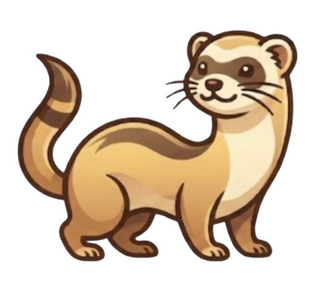
O protagonista original — ágil e determinado, pronto pra coletar todas as frutas da floresta.
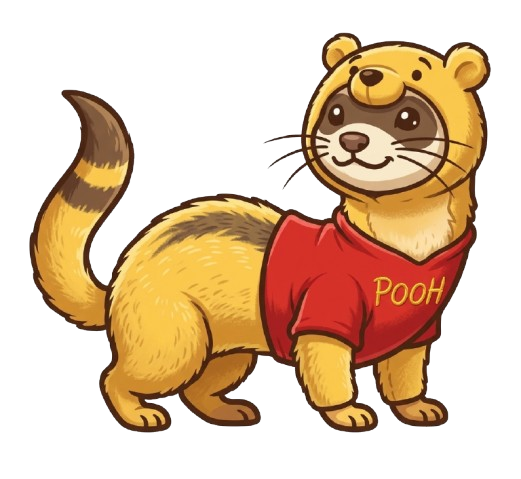
Inspirado no famoso ursinho, Poohret adora mel… e frutas! Uma escolha fofa e confiável.
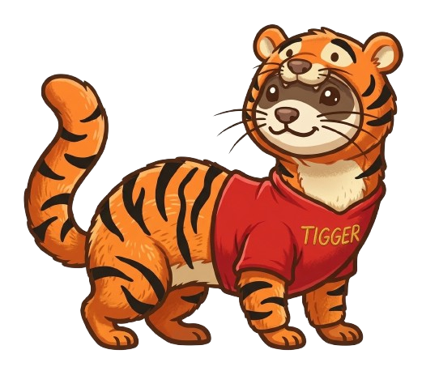
Elástico e saltitante como seu xará famoso — perfeito pra quem adora pular alto.
🍓 Frutas Coletáveis
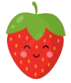
Pequeno e rápido de coletar — aparece com frequência nas três fases.
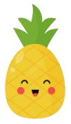
Espinhoso por fora, delicioso por dentro. Maior que o morango — mais fácil de pegar!
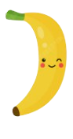
Clássica e nutritiva. Aparece em alturas variadas — fique de olho no ar!
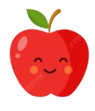
Vermelha e tentadora. Às vezes aparece bem baixinho — nem sempre precisa pular.
⚠️ Obstáculos
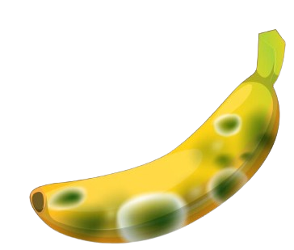
Parece inofensiva, mas está estragada! Colisão acumula penalidade e escorrega a pontuação.
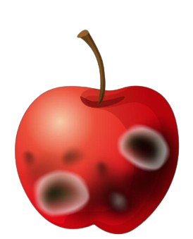
Fermentada e perigosa — desvie ou perderá pontos preciosos para a próxima fase.
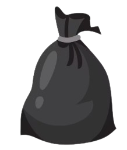
Quem jogou isso aqui?! Ocupa o chão e é difícil de desviar sem pular.
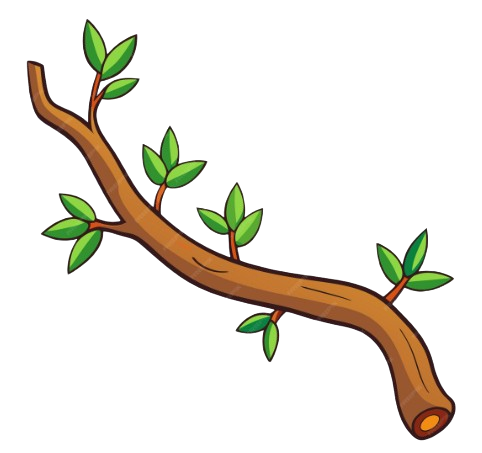
Fermentada e perigosa — desvie ou perderá pontos preciosos para a próxima fase.
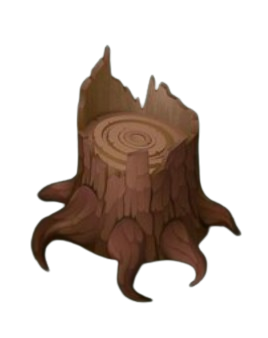
Quem jogou isso aqui?! Ocupa o chão e é difícil de desviar sem pular.
🚀 Fases
Pontos necessários: 20. Boa para aprender os controles e pegar o ritmo.
🐢 NormalPontos necessários: 40. Os obstáculos chegam mais rápido — fique alerta!
⚡ MédiaPontos necessários: 60. Tudo voa! Reflexos rápidos são a chave da vitória.
🔥 Alta❤️ Vidas & Dicas
Você começa com 4 vidas. A cada 5 colisões com obstáculos, perde 1 vida. Sem vidas = Game Over!
Perdeu tudo? Pressione R para recomeçar ou V para voltar ao menu inicial.
No modo 2P, P2 usa ↑ pra pular e → pra andar. Cada um tem suas próprias vidas e barra.
Pule cedo! Os obstáculos ficam cada vez mais rápidos nas fases finais. Antecipe o salto.